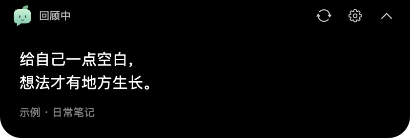

给记下的想法，一个再见的机会
和过去的想法，
再见一面。
那些舍不得忘记的句子，不必留在笔记深处。
让回见在 Mac 刘海旁，轻轻带它们回来。
适用于 Apple Silicon · macOS 14 及以上
给自己一点空白，
想法才有地方生长。
一点空白，一次重逢。
让想法回到日常。
网页演示 · 示例内容试试「换一条」和「收起」
本地保存无需账号按自己的节奏
记录之后，还有重逢
记下来的那一刻很好。
再读到时，也许刚刚好。
一本书里的摘录，一次工作中的领悟，
或是曾经留给自己的一个问题。
回见让它们在日常使用 Mac 的间隙，多一次被看见。

从一个轻松的频率开始
也支持自定义分钟 / 小时

回顾卡片实际截图 · 频率选项为示意很快，就能再见
从一条自己的笔记开始。
- 01
打开回见
下载 Mac App，移入「应用程序」。从菜单栏的小芽图标开始。
- 02
放进一段文字
打开「我的内容」，添加笔记，点击「保存并生效」。
- 03
和它再见一面
点击「预览这条」，立即看看它。之后，让回见按你的节奏出现。
你可能想知道
开始之前。
没有刘海屏，也能用吗？
可以。无刘海屏时，回见会在屏幕顶部居中显示。当前安装包适用于 Apple Silicon（M 系列芯片）和 macOS 14 及以上版本。
我的笔记会上传到哪里？
回见 App 将内容保存在本机，无需账号，也不依赖联网运行。菜单中的「打开数据目录」可以帮助你找到文件并备份。
可以导入 flomo 或已有笔记吗？
可以使用可选的回见助手 Skill，整理并导入文本、Markdown 或 flomo 导出。这是一次性文字导入，不连接笔记账号，也不自动同步。普通使用无需安装 Skill。
查看导入方式会打断我正在做的事吗？
回顾卡片不会主动抢走键盘焦点。你可以调整展示频率、关闭自动展开，或者从菜单暂停展示，找到适合自己的方式。
这是正式版吗？如何反馈问题？
目前是公开测试版，尚未使用 Apple Developer ID 签名或经过 Apple 公证。不同设备和使用场景仍需要继续验证。遇到问题时，可以附上 App 版本、macOS 版本和复现步骤提交反馈。
前往 GitHub 反馈
回见 · Mac 公开测试版
下一次，遇见自己的想法。
Apple Silicon · macOS 14 及以上
当前版本尚未经过 Apple 公证，首次打开可能需要手动允许。